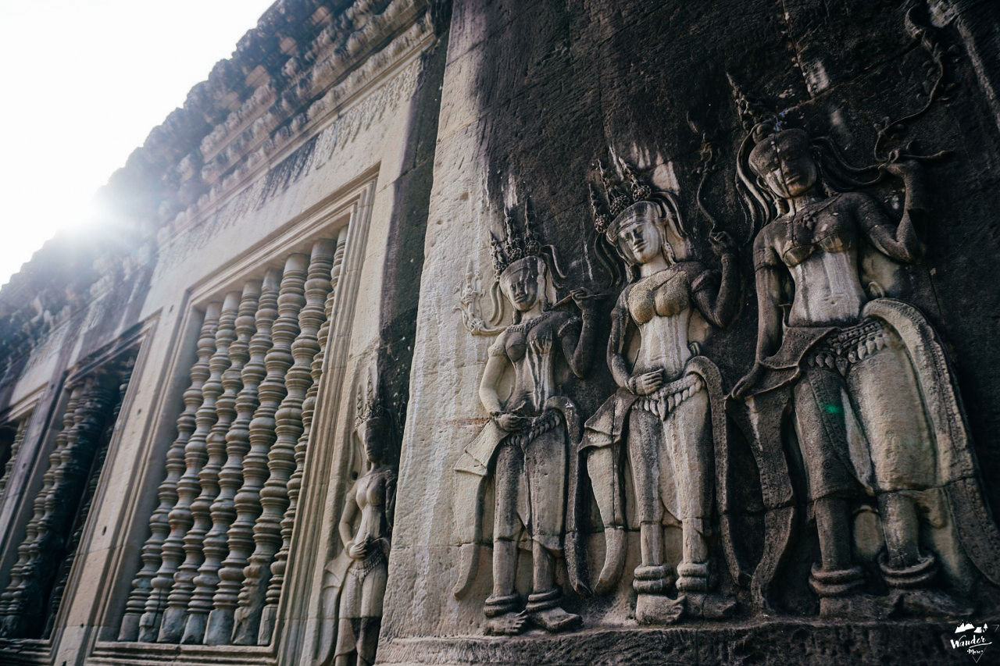
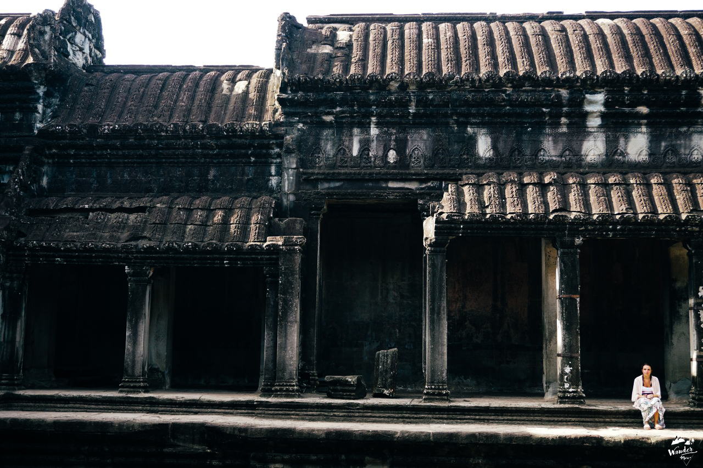
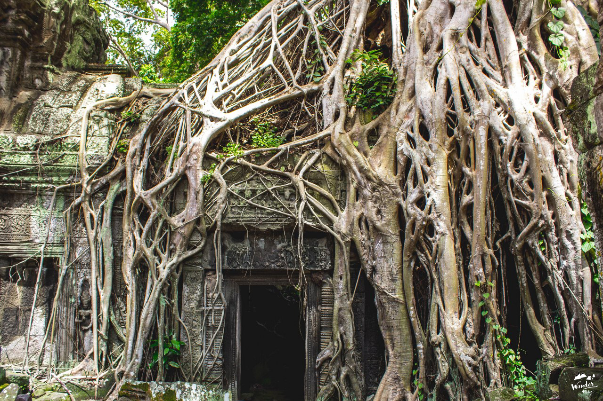
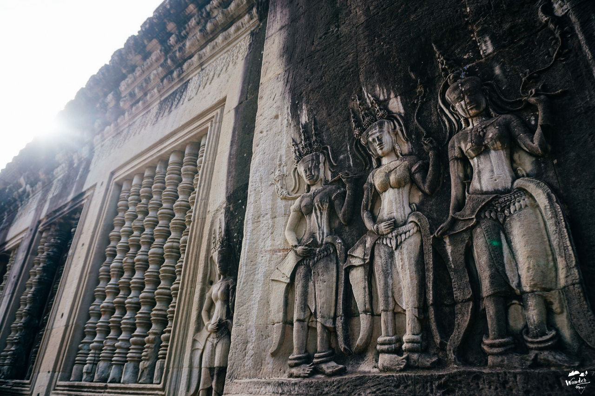
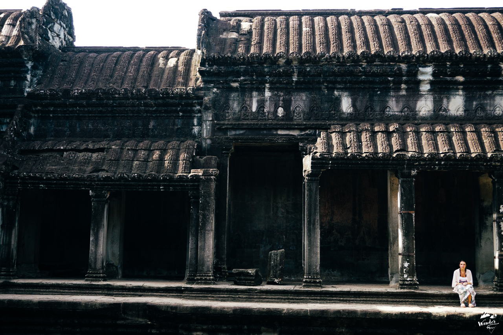
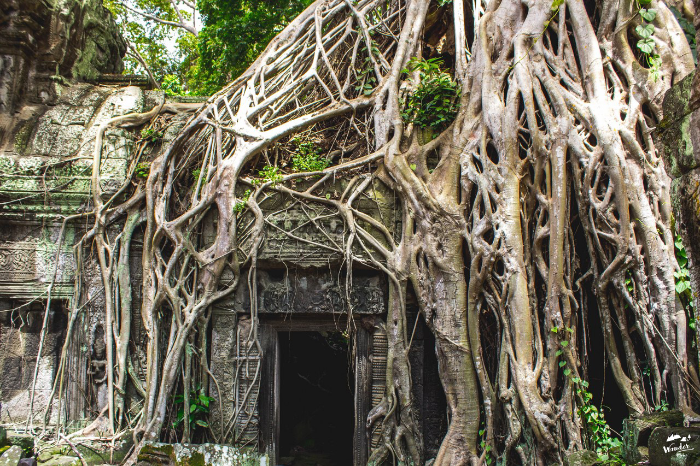
ฉันยืนอออยู่ท่ามกลางฝูงชนมากมาย เหมือนเดินอยู่ในตลาดนัด ท่ามกลางอากาศร้อนอบอ้าวจนต้องอาบเหงื่อต่างน้ำ ฉันเดินลงข้างทาง หาที่หลบมุม วางเป้ลงข้างบันไดหินที่ทำขึ้นจากศิลาแลงผุกร่อนแต่ยังคงทนทานสู้กาลเวลา อากาศร้อนๆ ยามบ่ายบังคับให้ฉันต้องรวบผมขึ้นสูง แล้วทนฝืนใส่หมวกเพื่อกันแสงแดดจ้าที่ดูไม่ค่อยจะปรานีกับใคร แปลกที่เขมรอากาศร้อนกว่าบ้านเราเยอะ ทั้งๆ ที่ดูเหมือนจะมีพื้นที่สีเขียวเยอะกว่า
‘ไม่ไหวแล้ว พรุ่งนี้ค่อยมาใหม่’ ฉันถอดใจ หลังจากทนฝูงชนที่พลุกพล่านมากเกินไปไม่ไหว ดูเหมือนผู้คนจากทั่วโลกจะพร้อมใจกันหลั่งไหลมาที่นี่ เฉพาะจุดฉันยืนอยู่ คงมีคนไม่น้อยกว่าร้อยคน เด็กเขมรตัวเล็กๆ หลายคน วิ่งตามนักท่องเที่ยวเพื่อขายโปสการ์ดกับพัดไม้กันจ้าละหวั่น ฉันโบกมือเพื่อบอกปัดไปหลายรอบ โชคดีที่เด็กๆ สนใจนักท่องเที่ยวฝรั่งมากกว่า
วันต่อมา… ฉันตื่นตั้งแต่ตี 5 เพื่อไปดูพระอาทิตย์ขึ้นที่นครวัด หวังไว้ในใจว่าการไปช่วงเช้าๆ อากาศจะร้อนน้อยกว่าช่วงบ่าย ฉันนัดลุงขับรถสามล้อคนหนึ่งให้มารับหน้าที่พัก ลุงก็มารับตรงเวลา รถมอเตอร์ไซค์สามล้อของเราขับไปตามถนนเมืองเสียมเรียบอย่างไม่รีบร้อน อากาศตอนเช้ามืด เป็นอากาศที่หอมดีเสียจริง ไอน้ำค้างเย็นๆ ตามใบหญ้า เหมือนจะลอยมาให้ได้กลิ่น
รถสามล้อของเราวิ่งผ่านป่าข้างทางที่มืดมิด มีแสงไฟจากถนนเป็นช่วงๆ ฉันหันมองข้างทางเป็นระยะๆ พลางสงสัยว่า ป่าในเมืองจะมีสิงสาราสัตว์อยู่หรือเปล่า หากมี…พวกมันจะตื่นหรือหลับอยู่ในเวลานี้…
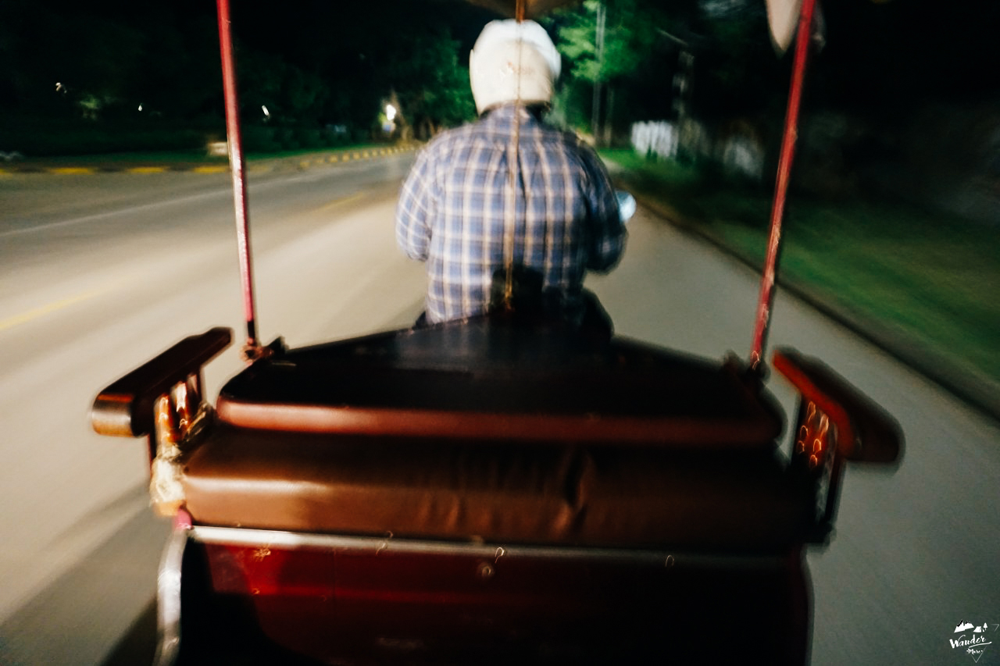
ตี 5 ครึ่ง ฉันเดินทางถึงนครวัด มีกลุ่มนักเดินทางมาถึงก่อนหน้าฉันแล้วมากมาย เราต่างพกไฟฉายมา เพราะในยามนั้นทุกอย่างยังมืดมิด เดินไม่เห็นทาง ฉันเดินลึกเข้าไปเรื่อยๆ อย่างคนรู้ทาง ผ่านโป๊ะลอยน้ำขนาดยักษ์ที่ทำไว้เพื่อให้นักท่องเที่ยวเดินข้ามสระบัว
นักเดินทางทุกคน ต่างจับจองหามุมถ่ายรูปเพื่อให้ได้ภาพออกมาน่าประทับใจที่สุด ส่วนฉัน เดินออกไปอีกฝั่ง เพื่อบันทึกภาพพวกเขาเอาไว้ ทุกคนยอมตื่นเช้า ไม่ได้กินข้าว เดินทางมาที่เดียวกันราวกับนัดกันไว้
เพื่อมาให้สถานที่แห่งนี้ประทับรอยความทรงจำให้พวกเขาเอากลับบ้าน
ฉันถือเป็นเพื่อนร่วมอุดมการณ์
เรายืนรอกันอยู่นาน จนท้องฟ้าเริ่มเป็นสีชมพู ตามมาด้วยสีเหลือง สีส้ม ทุกคนใจจดใจจ่อ ราวกับมาดูโชว์สุดตระการตา
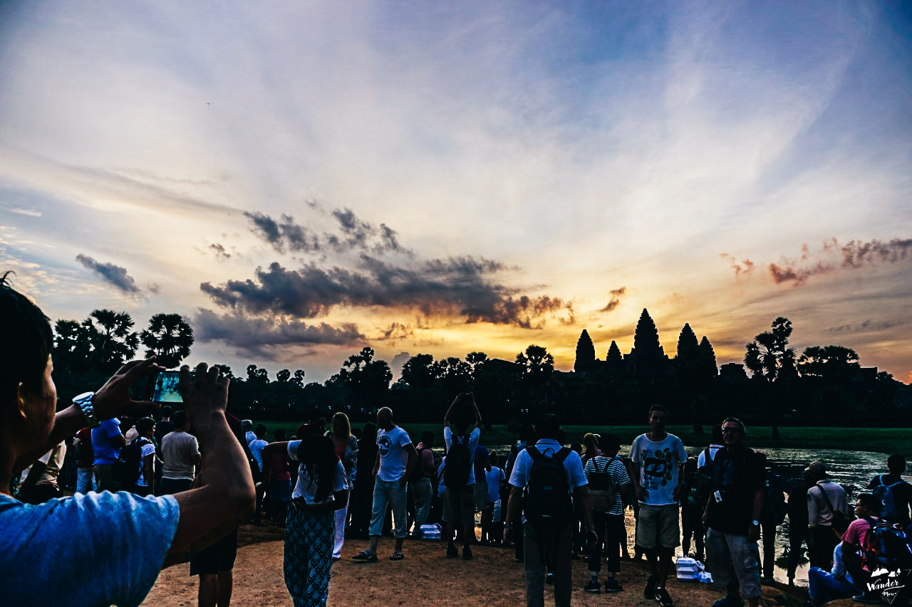
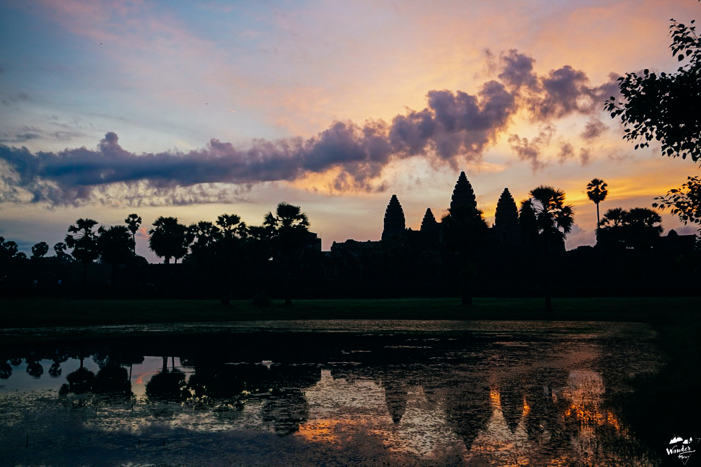
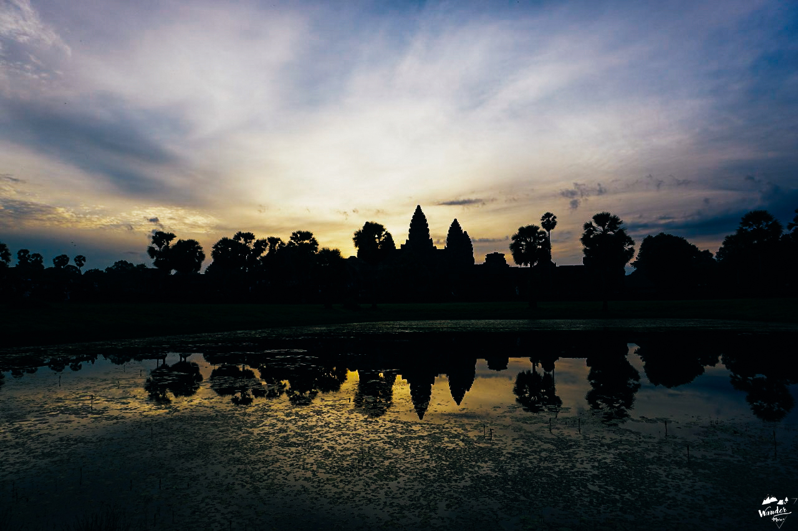
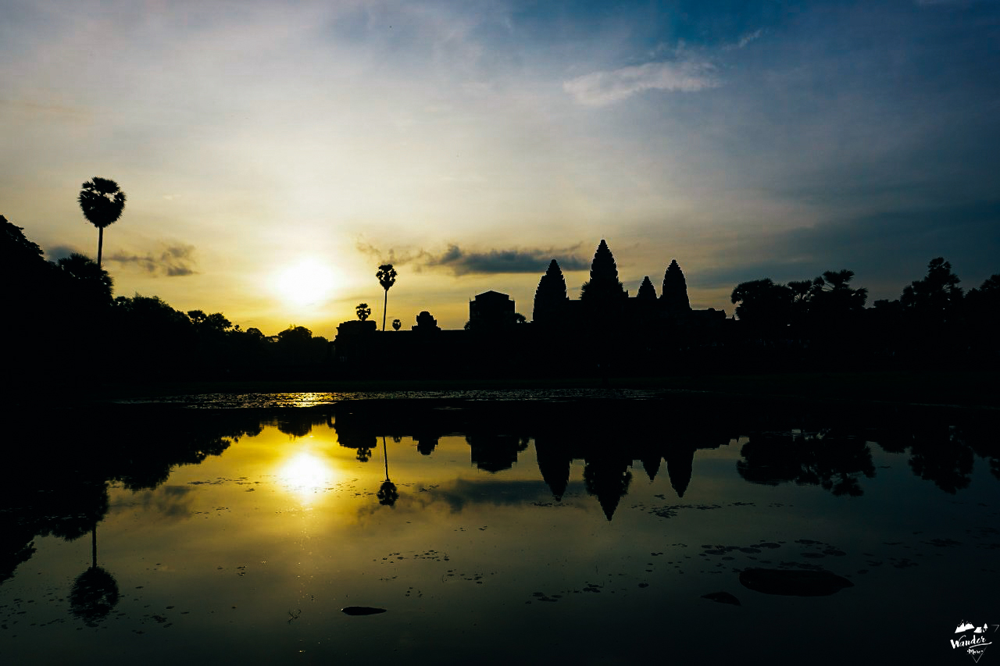
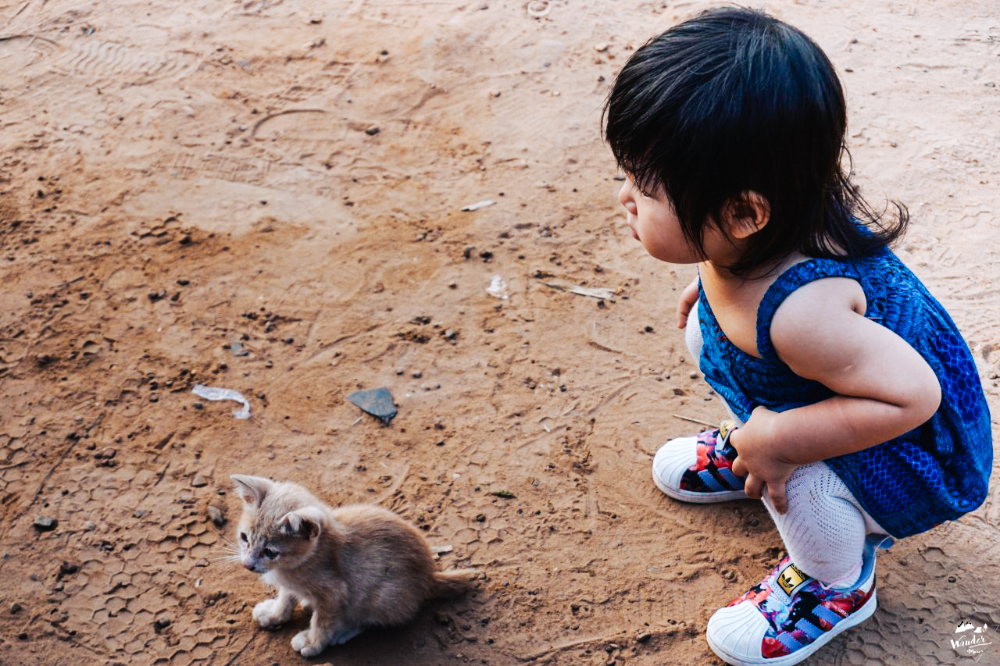
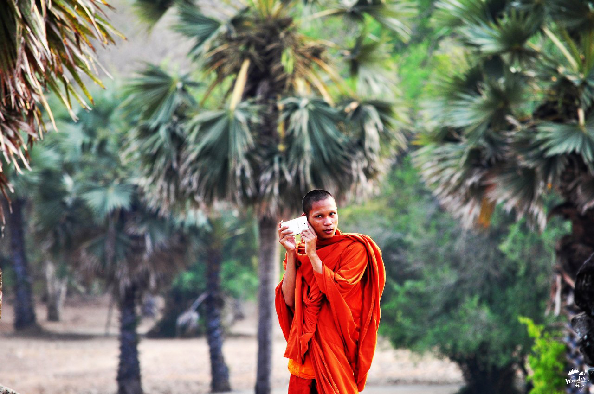
พระอาทิตย์ขึ้นแล้ว…
ตอนนี้เอง ฉันสนใจดูปฏิกิริยาของคนรอบข้างมากกว่าสนใจพระอาทิตย์เสียอีก…
คู่รักนักเดินทางคู่หนึ่งกุมมือกัน แล้วหันมามอง ยิ้มให้กันอย่างมีความหมาย
หญิงฝรั่งคนหนึ่ง เดินไปด้านหน้าใกล้ปราสาทแล้วอ้าแขนกว้างๆ ให้เพื่อนถ่ายภาพ
โดยไม่สนว่าตนเองกำลังบังกล้องคนอีกหลายร้อยคน
เด็กผู้หญิงชาวจีนตัวเล็กๆ คนนึง ไม่สนใจสิ่งที่พ่อแม่พามาดู เพราะเธอกำลังสนใจลูกแมวที่เดินหาเศษอาหารอยู่บนลานดินมากกว่า
วัยรุ่นฝรั่งกลุ่มหนึ่ง เอนกายเอกเขนกอยู่ข้างสระ โดยไม่สนว่าตนเองจะเปื้อนดินโคลน หรือมีกบเขียดริ้นไรมาไต่ขา คงเพราะสิ่งที่เห็นตรงหน้านั้นสำคัญมากกว่า
ชายฝรั่งสูงวัยในเสื้อซาฟารีคนหนึ่ง ยืนยิ้มเพียงลำพัง…
ในความคิดของใครหลายๆ คนที่อุตส่าห์เดินทางข้ามโลกมาถึงที่นี่เพื่อให้ได้นอนตายตาหลับ ดังคำที่มีคนเคยกล่าวไว้ อาจมองว่า นครวัดที่เต็มไปด้วยผู้คน ไม่ได้มีบรรยากาศเงียบสงบดังที่หวัง
แม้แต่เสียมเรียบยังถูกทำให้เป็นเมืองท่องเที่ยว บรรยากาศเหมือนเดินในตรอกข้าวสาร แต่ตอนเช้ามืดของวันนั้นเองที่ฉันรู้สึกว่า มนต์เสน่ห์ความขลังและความงดงามของนครวัด ยังคงไม่ทำให้ใครผิดหวังเลย.